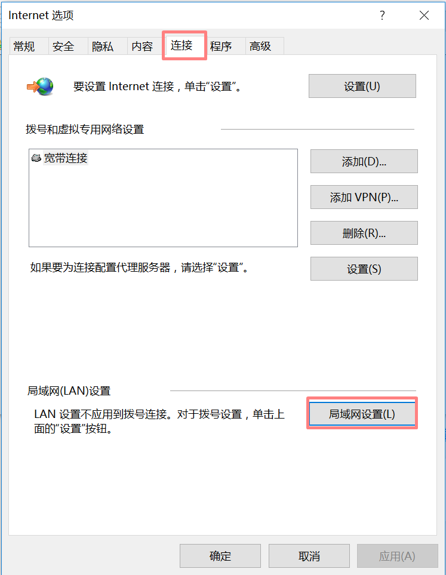
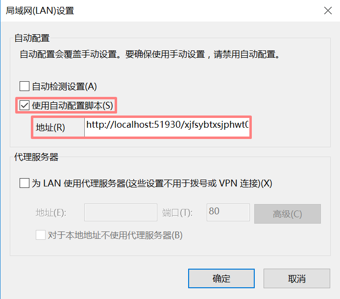
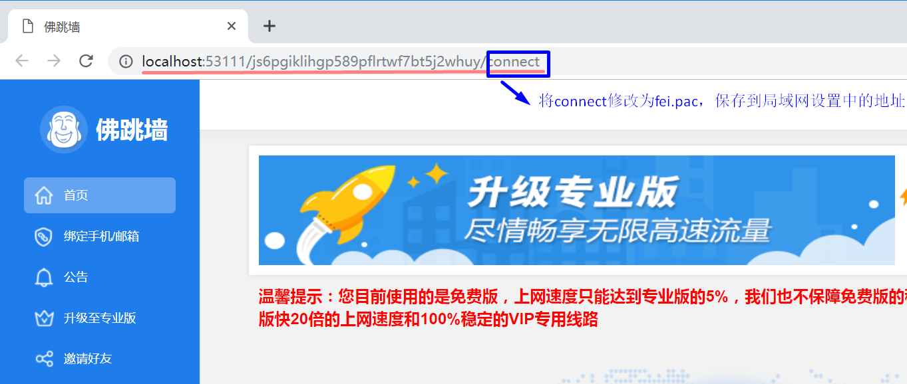

代理设置失败教程
一、打开IE浏览器，在右上角点击工具（有些系统会是齿轮图标）->Internet选项

二、选中 连接->局域网设置
三、勾选 使用自动配置脚本； 复制佛跳墙首页上地址栏上的内容 把最后的connect修改为fei.pac（比如如：http://localhost:53111/js6pgiklihgp589pflrtwf7bt5j2whuy/fei.pac，这只是个例子，一定要复制您电脑上佛跳墙首页上的地址），填写到 局域网设置 中的 地址 上

四、一直按确定， 在IE浏览器上尝试访问 google.com 能不能打开。